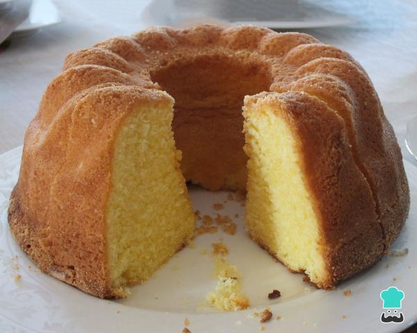

LASAGNA

Descrição
Essa receita de bolo é uma daquelas receitas básicas e deliciosas:
ele pode ser incrementado com calda de chocolate, recheio de brigadeiro,
doce de leite e outras delícias.
A sua dúvida é como fazer um bolo fofinho e molhadinho para a sobremesa?
Separamos 10 dicas muito fáceis e úteis. Com certeza você vai fazer sucesso,
não importa se com uma receita de bolo comum ou bem elaborado.
Ingredientes:
- 2 xícaras (chá) de açúcar
- 3 xícaras (chá) de farinha de trigo
- 4 colheres (sopa) de margarina
- 3 ovos
- 1 e 1/2 xícara (chá) de leite
- 1 colher (sopa) bem cheia de fermento em pó
Modo de preparo:
- Bata as claras em neve e reserve.
- Misture as gemas, a margarina e o açúcar até obter uma massa homogênea.
- Acrescente o leite e a farinha de trigo aos poucos, sem parar de bater.
- Por último, adicione as claras em neve e o fermento.
- Despeje a massa em uma forma grande de furo central untada e enfarinhada.
- Asse em forno médio 180 °C, preaquecido, por aproximadamente 40 minutos ou ao furar o bolo com um garfo, este saia limpo.